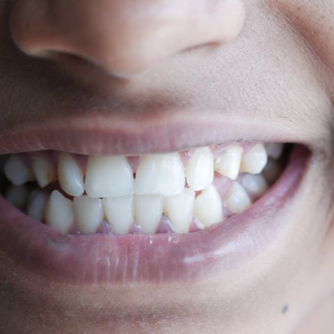
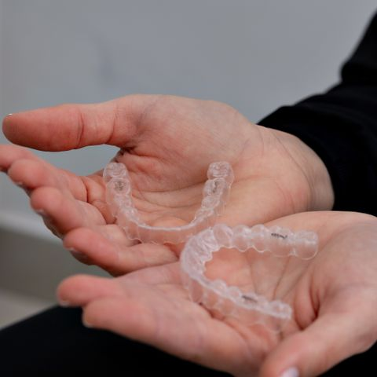
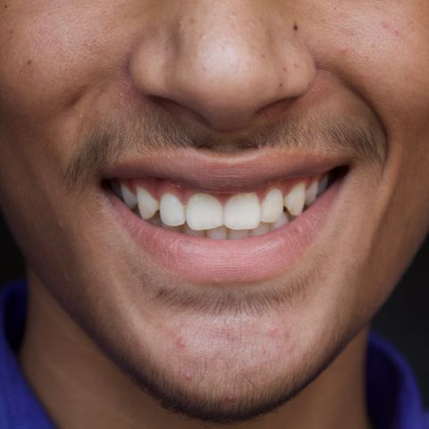
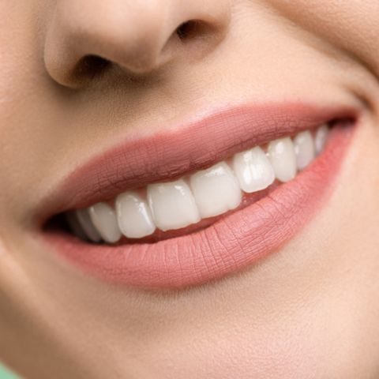
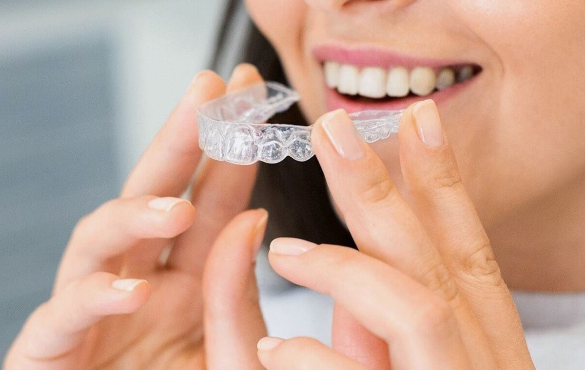
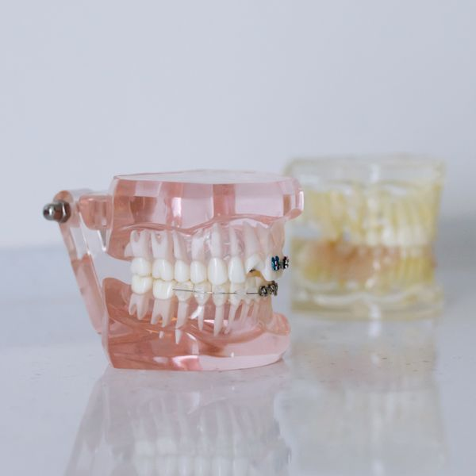
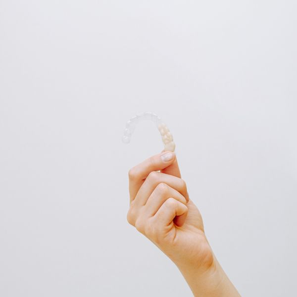
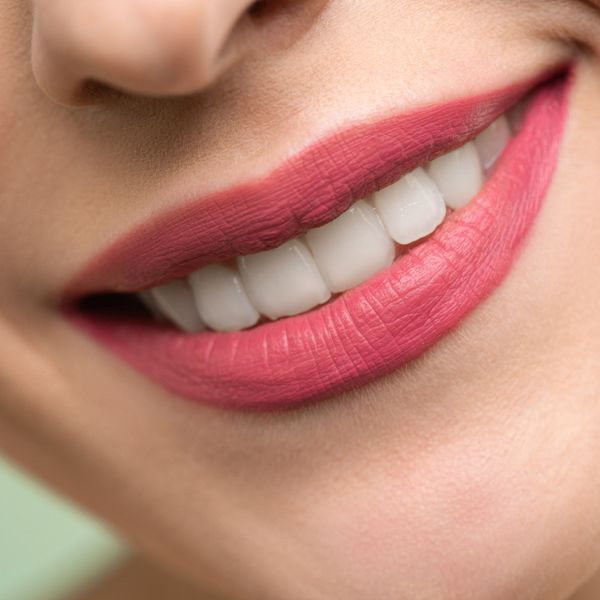

Discreto por ser transparente
O alinhador é feito de um plástico transparente e resistente, praticamente invisível no dia a dia.
Alinhe seus dentes com conforto, praticidade e liberdade! Deixe seu e-mail para que a Dra. Helena possa entrar em contato e agendar uma avaliação gratuita.
Ou ligue para a Helena Prado Odontologia: (48) 1234-5678




O alinhador é feito de um plástico transparente e resistente, praticamente invisível no dia a dia.
Diferente dos bráquetes do aparelho fixo, ele sai na hora das refeições e da escovação.
Sem peças de metal, não machuca a boca nem exige o ajuste de fios a cada consulta.
Como não há peças fixas para ajustar, as consultas de acompanhamento costumam ser mais curtas e mais espaçadas.
Fino e ajustado aos dentes, o alinhador quase não interfere na fala depois dos primeiros dias.
Com um software de simulação, você vê a previsão de como os dentes vão se mover antes de iniciar o tratamento.

O tratamento é praticamente invisível e não muda a aparência de quem usa. Os alinhadores são removíveis, o que facilita a escovação e o cuidado com as gengivas.
Especialista em Ortodontia, a Dra. Helena trabalha com alinhadores transparentes há mais de dez anos e acompanha cada etapa do tratamento, da avaliação à última placa.
Sensação de liberdade é perceber que você não está amarrado a nada.



Você marca uma avaliação gratuita, e a dentista examina os dentes e a mordida para ver se o alinhador é indicado para o seu caso.
A partir de fotos e de um escaneamento 3D da boca, um software mostra como os dentes vão se mover, etapa por etapa.
Com o plano aprovado por você, os alinhadores são produzidos sob medida, uma placa para cada fase do tratamento.
Na consulta de entrega, a dentista confere o encaixe e explica como colocar, tirar e limpar cada placa.
As placas ficam na boca a maior parte do dia, saem só para comer e escovar, e são trocadas no prazo que a dentista indicar.
Depois da última placa vem a contenção, que mantém os dentes na nova posição.
Dra. Helena Prado
Ortodontista
Telefone: (48) 1234-5678
E-mail: contato@helenaprado.example
Endereço: Centro, Florianópolis/SC